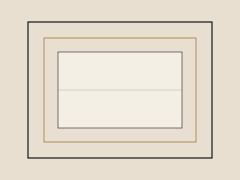

Product line
Conscious Mirror
The outer scene is not a separate country. It tends to follow the weather of attention, mood, and the stories you keep repeating to yourself.

Conscious Mirror is a set of tools for watching that correspondence without turning it into a superstition. You look at a day, a conversation, or a recurring wish, and you ask what inner stance it might be echoing. The point is not to control the world. The point is to see the relationship more clearly.
Journals, card decks, and short practices live here. They ask for honesty and a little time. They do not ask you to become someone else.